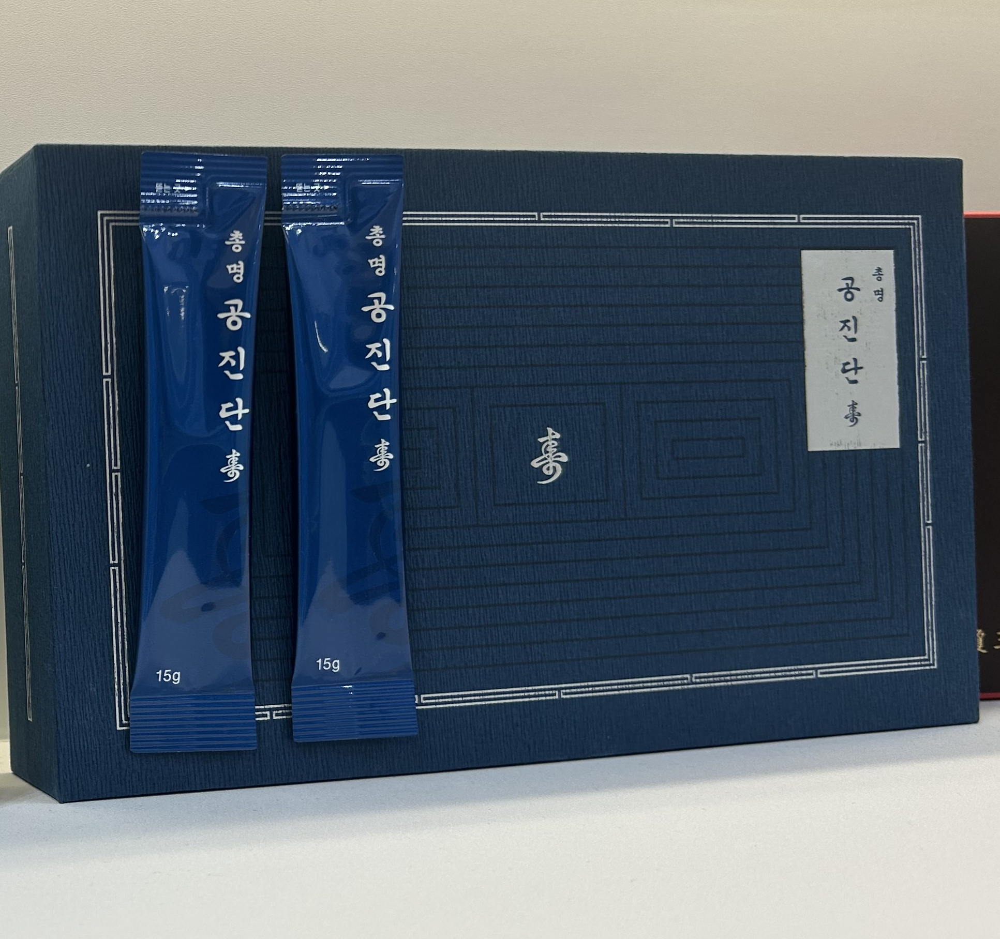

학업과 업무로 지친 일상 속에서
집중력과 건강한 컨디션을 관리할 수 있도록 돕는 한방 처방입니다.

총명탕은 동의보감 등에 기록된 전통적인 한방 처방으로, 학업이나 업무 등으로 정신적인 피로가 쌓인 경우 건강한 컨디션을 유지할 수 있도록 활용되어 왔습니다.
같은 총명탕이라도 연령과 체질, 수면 상태, 생활습관과 현재의 건강 상태에 따라 필요한 처방과 복용 방법은 달라질 수 있습니다.
전통적으로 정신을 맑게 하고 심신의 안정을 돕는 데 활용되어 온 약재입니다.
전통적으로 머리를 맑게 하고 정신적인 피로를 관리하는 데 활용되어 온 약재입니다.
전통적으로 마음을 편안하게 하고 심신의 균형을 돕는 약재로 활용되어 왔습니다.
개인의 체질과 건강 상태에 따라 필요한 약재를 고려하여 처방합니다.
집중력은 단순히 한 가지 요소만으로 결정되지 않습니다. 수면과 식습관, 체력, 스트레스 등 전반적인 건강 상태를 살펴보고 현재 몸 상태에 맞는 처방과 생활 관리를 함께 안내해드립니다.
학업이나 업무로 지친 몸과 마음의 건강 관리가 필요하시다면
편하게 상담해 주세요.
본 페이지의 내용은 일반적인 건강정보를 제공하기 위한 것으로, 개인의 건강 상태에 따라 처방 및 복용 방법이 달라질 수 있습니다. 정확한 복용 여부와 방법은 한의사와 상담 후 결정하시기 바랍니다.